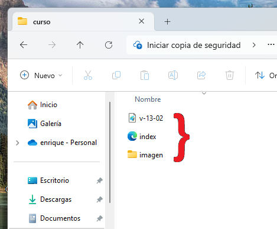
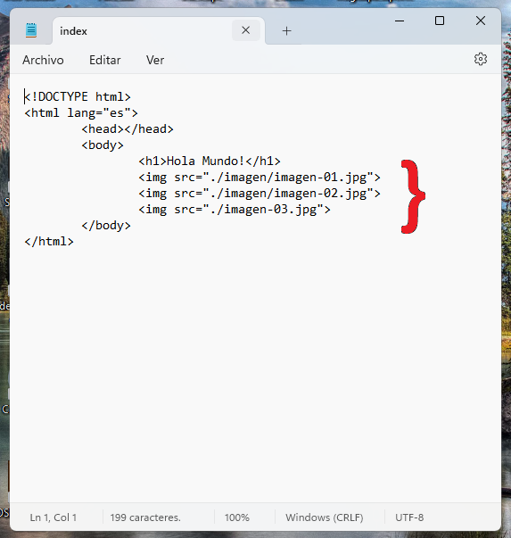

Ya tenemos las imágenes ubicadas en las posiciones que les indiqué, esto es para que vean de forma práctica el tema de las rutas.
como ven en la siguiente imagen, tenemos tres archivos y todos están al mismo nivel, a esta ruta la vamos a identificar con la siguiente simbología: ./ (un punto seguido de una barra invertida) los archivos que están en la carpeta "imagen" están en otro nivel, entonces se hace así: ./imagen/archivo.extensión (el punto, la barra invertida, el nombre de la carpeta, otra barra invertida y el nombre del archivo con todo y extensión)
para navegar entre carpetas, podemos usar dos puntos para retroceder, de esta manera: "../" (dos puntos y una barra invertida), esto nos devolverá a la carpeta inmediatamente anterior
Para usar este sistema de rutas en nuestra página web vamos a abrir de nuevo nuestro archivo index.js con el block de notas y, dentro de la etiqueta "body", es decir, anidadas dentro de la etiqueta "body", escribimos dos etiquetas "img" y cada una tendrá un atributo "src" y cada atributo tendrá como valor la ruta que lleva a nuestras imágenes.

Ahora sólo vamos a la pestaña archivo, elegimos la opción guardar y listo. Lo que nos queda será hacer doble clic a nuestro archivo index.js y mirar lo que hemos construido.
Practiquemos un poco:
Tenemos la carpeta principal llamada "principal", dentro, hay dos sub-carpetas llamadas "imagen" y "audio". Dentro de la carpeta "imagen" hay un archivo llamado "imagen.jpg"
si estamos dentro de la carpeta "audio", indica la ruta correcta para llegar al archivo "imagen.jpg"